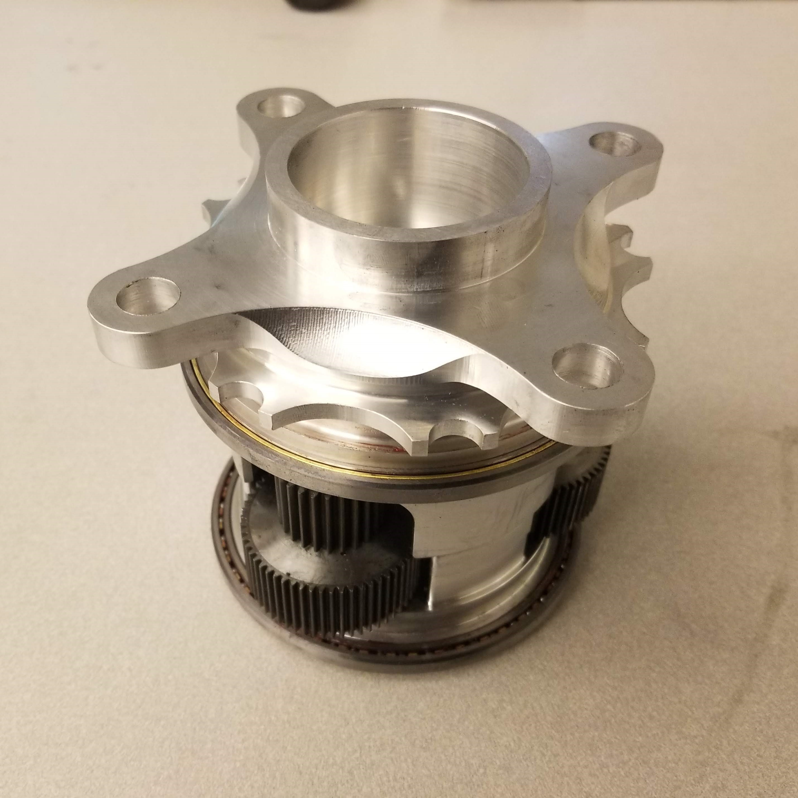
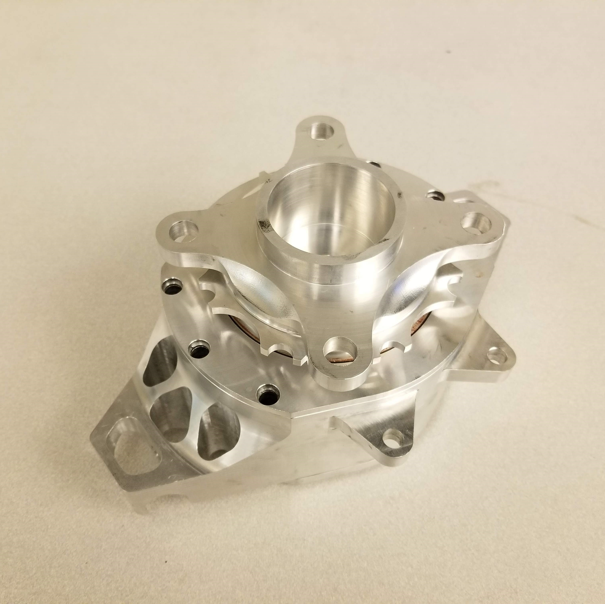
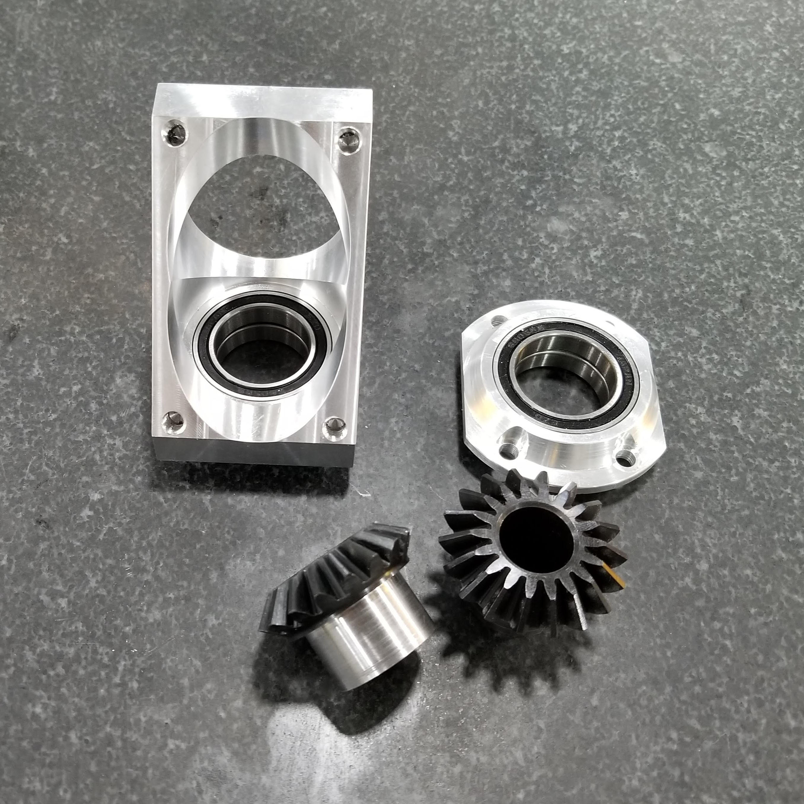
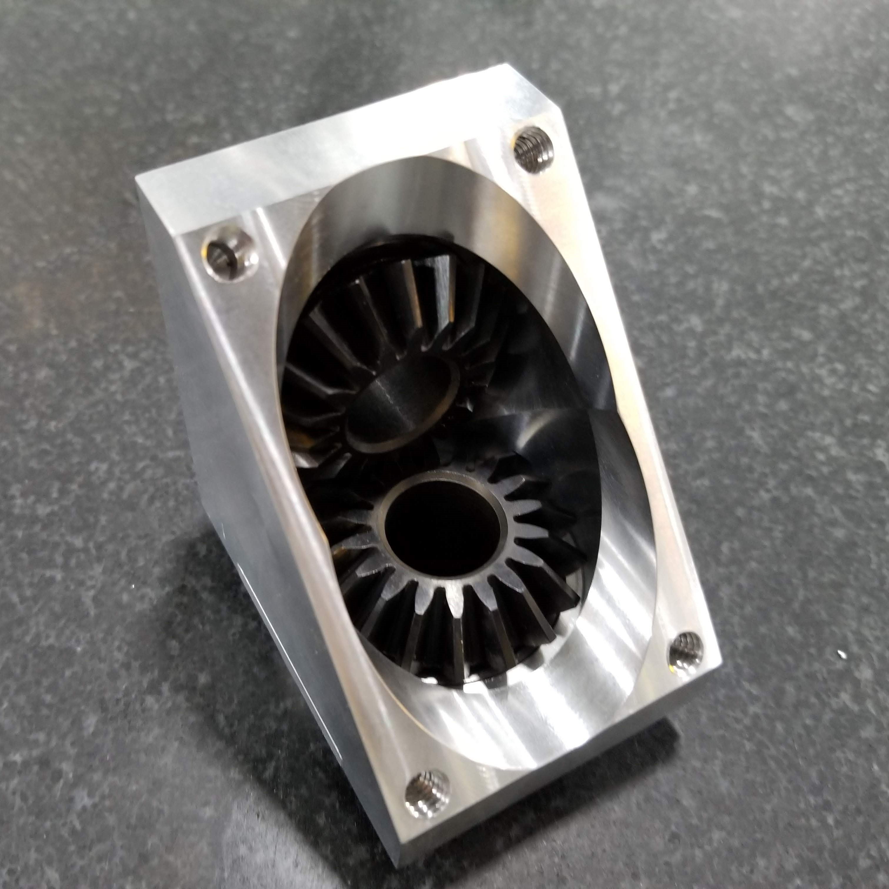
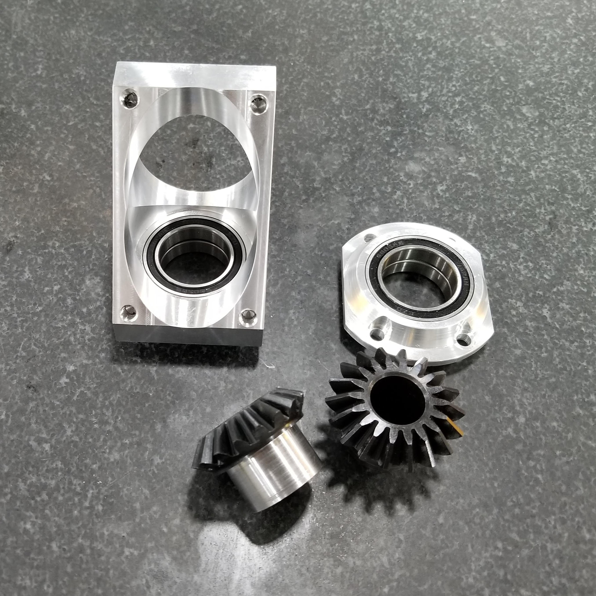
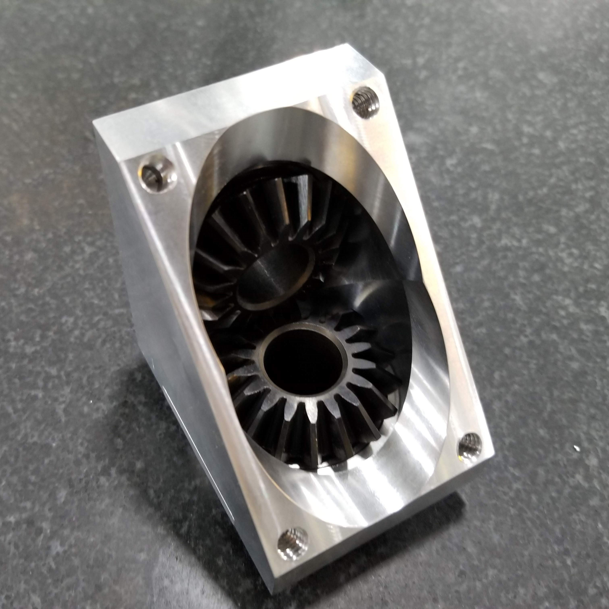

Aaron Ng
I am a third-year Mechanical Engineering undergraduate interested in 3D modeling, simulation, rapid prototyping, and manufacturing. I have experience with Solidworks, Fusion 360 CAD/CAM, and CNC machining. I am self-motivated, hardworking and innovative, with extensive hands-on experience working in fast-paced design and manufacturing environments.
Experience
Powertrain Lead / Lead Manufacturing Engineer
Responsible for powertrain design and manufacturing, as well as overall vehicle design and system integration.
Mechanical Design
• Designed an 80kw dual-stage electric gearbox with integrated differential and motor scatter shield.
• Wrote a quasi-static vehicle lap sim in Matlab to determine the optimal final gear ratio.
• Wrote Matlab script to automate AGMA gear bending fatigue and surface wear calculations which narrowed down millions of possible gear combinations to those within the vehicle size and performance constraints.
• Designed gearbox housing to minimize gear deflection under load while limiting weight.
• Reduced pedal assembly weight by 20% through Solidworks FEA in conjunction with an iterative design process.
• Improved pedal ergonomics by designing an integrated footrest and properly sizing pedal length and face size.
Manufacturing
• Led design and manufacturing reviews to develop parts that are light and stiff while also designed for manufacturing.
• Experienced in programming and operating 4 axis CNC machines to machine complex components, such as uprights, hubs, and gearboxes, while keeping a tolerance of 0.0004 inches through multiple setups.
• Designed and manufactured custom fixtures to properly machine unconventionally shaped parts and assemblies.
• Responsible for parts inspection quality control, and preventative maintenance on all tools and machines, as well as general shop upkeep, cleanliness, and safety.
Responsible for parts inspection quality control, and preventative maintenance on all tools and machines, as well as general shop upkeep, cleanliness, and safety.
Worked as an engineer to support manufacturing and testing operations on the shop floor.
• Replaced a degrading water hose for a water dynamometer with a series of expansion joints, couplers, and flanges.
• Worked with external machine shops to develop parts and processes that are cost-effective
• Reduced the cost from the OEM solution by 50% while providing more longitudinal flexibility.
• Created a manufacturing visual aid for submarine water lines. Worked with machinists on the shop floor to create a step by step plan on how to cut, bend, and assemble the lines while maintaining the tolerances needed.
• Helped move a large heat exchanger by creating detailed 3D models to determine possible spots for relocation.
CNC Programmer / Machinist
Trained in FeatureCAM, CNC machining, and workflow, as well as manual part inspection and basic GD&T.
• Designed and machined custom tooling to accurately crimp rings onto thin solar sail fabric
• Experience in part setup and fixture design. Developed creative solutions for difficult work holding problems
• Trained in manual machining on Bridgeport mills and monarch ee lathes.
• Diagnosed and fixed a faulty plasma table by redesigning the torch mount to provide more degrees of freedom, which allowed better squaring between the torch and the table.
Education
UC Riverside
Portfolio






 